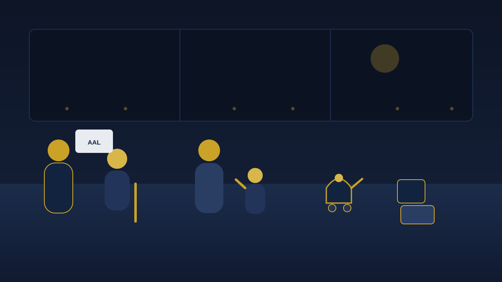

签证:每个人都要,包括婴儿
中国护照入境越南,每个家庭成员单独一份e-visa - 孩子不能挂在父母申请里。给孩子申请时用孩子本人的护照信息页和白底证件照,在官网单独提交。申请步骤和费用与成人相同 - 详见电子签证申请攻略。
出发机场:能免费安排的提前安排
- 婴儿车推到舱门:大部分航司允许gate check - 婴儿车用到登机口再托运,落地后在舱门口或行李转盘取回。值机时跟柜台确认拿回点。
- 轮椅服务免费但要提前:老人膝盖不好或走不远,提前48-72小时通过航司申请WCHR轮椅服务,免费从值机柜台推到登机口,落地也有轮椅接。注意:到港高峰轮椅和推轮椅的人手有限,可能要等几轮。
- 座位选前排:早下机=早进队伍,差五分钟下机可能就是差四十分钟排队。
落地之后:一家人最大的坎是入境长队
越南机场入境外国护照全走人工柜台 - 高峰60-100分钟(见排队实况)。对老人这是体力活,对小孩这是哭闹高发区,对家长这是一手抱娃一手拖箱的窘境。这条队是全旅程里对三代同堂最不友好的一环。
- 柜台前没有休息区,只能硬站。
- 带孩子没有"家庭绿色通道" - 越南机场没有这类官方通道。
- 婴儿车此时还没取回(在行李转盘),最小的孩子全程得手抱。
快速通关:按人收费,全家一起走
机场快速通关服务解决的就是这一环:工作人员在机舱门口举牌接你们一家人,整组走优先通道入境 - 老人不用站,小孩不用抱着耗一小时,婴儿车优先取。从$25/人起,全家同行一个订单搞定。中文工作人员可全程沟通,不用担心语言。流程细节看中文指南首页。
取完行李:去市区的车
- Grab最方便 - 有老人小孩别去挤机场大巴。SGN到市区约100,000-150,000越南盾,HAN到市中心约250,000-350,000。
- 人多行李多选7座车(GrabCar 7或出租车大车型),4大2小+行李,一辆7座刚好。
- 机场到达厅外是Grab上车点,跟app里指示走,不要理会厅里拉客的司机。
常见问题
带婴儿车可以推到登机口吗?
大部分航空公司允许把婴儿车免费推到登机口/舱门口再托运(gate check),落地后在行李转盘或舱门口取回,各航司规则不同,值机时确认。
老人行动不方便可以预约轮椅吗?
可以。通过航空公司提前48-72小时申请轮椅服务(WCHR),免费,工作人员从值机柜台推到登机口,落地时也有轮椅接机 - 但到港高峰时段轮椅和人员有限,可能等。
一家人可以一起走快速通关吗?
可以。快速通关按人收费、全家同行 - 工作人员把全家作为一组带优先通道,老人不用站一小时,小孩不用抱着排队。
小孩也要签证吗?
要。包括婴儿在内,每个持中国护照的人都需要自己的e-visa或签证 - 给孩子申请时用孩子本人护照和照片单独提交一份申请。
按落地机场继续准备:新山一机场攻略、内排机场攻略、岘港机场攻略。
约15分钟机舱门到出口 - 运营方平均通关时间
≤2小时工作时间内预订确认
从$25起每人 - 按机场和套餐定价
中文服务中文工作人员可全程沟通
带全家出行?让落地那一个小时不再是难关:
预订快速通关 - 实时价格SGN · HAN · DAD - 机舱门举牌接机 + 全家一起走优先通道
预订后2个工作小时内人工确认,按你的航班安排工作人员。无需预付 - 见面当天付现金。